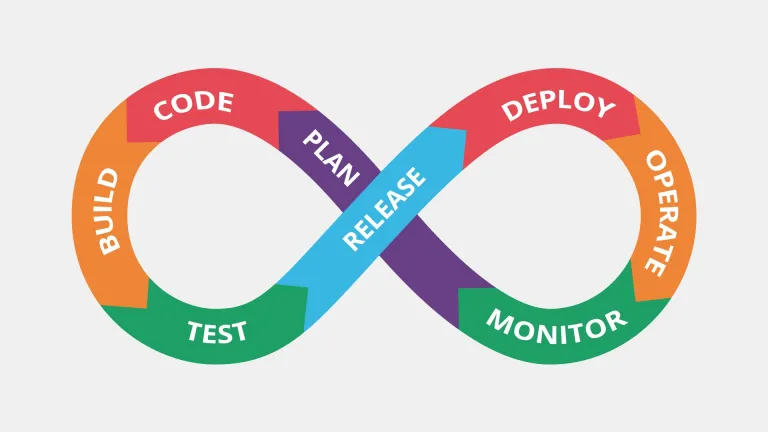

DevOps
estado: en progreso (ver pendientes)Partimos de codificar en nuestra PC. ¿Qué pasa si queremos mostrar nuestra app o página? No podemos directamente: debemos "desplegar (deploy)" en un servidor (server) y luego comprar un dominio (domain) para no exponer la IP pública.
Si crece el equipo de trabajo, debemos utilizar herramientas como Git y GitHub para poder trabajar de forma colaborativa.
En este punto ya podemos construir (build) nuestra app o página y desplegarla (deploy) en el servidor. También podemos tener servidores separados: uno para construir, otro para pruebas (testing) y otro para producción.
Este proceso inicial es manual, pero se puede automatizar; de ahí las siglas CI/CD, que significan Continuous Integration / Continuous Deployment.
Para que nuestra app funcione en todos los servidores, estos deben tener todas las dependencias necesarias. Para que esto no falle se utiliza Docker: construimos una imagen de nuestra app y luego la ejecutamos en el servidor. La instancia de cada imagen es un contenedor (container), aislado del resto, lo que permite desplegar múltiples versiones de la app en un mismo servidor.
Ahora imaginen que crece la cantidad de servidores (escalabilidad horizontal) y queremos mantener todas las instancias de nuestros contenedores, controlarlos y asegurar que todo funcione correctamente. Es un proceso tedioso y propenso a fallos si lo hacemos manualmente; para ello podemos orquestar todo mediante una herramienta llamada Kubernetes.
Habíamos mencionado que debemos tener en cada servidor las mismas dependencias. Para automatizar su configuración podemos usar Terraform (para aprovisionar la infraestructura) y Ansible (para configurar las dependencias en cada servidor).
Una vez que tenemos todo funcionando correctamente, debemos monitorear los servidores para analizar su comportamiento y detectar fallas rápidamente. Con Prometheus recolectamos métricas como uso de CPU, RAM, procesos activos, etc., y luego visualizamos gráficos en tiempo real con Grafana.
